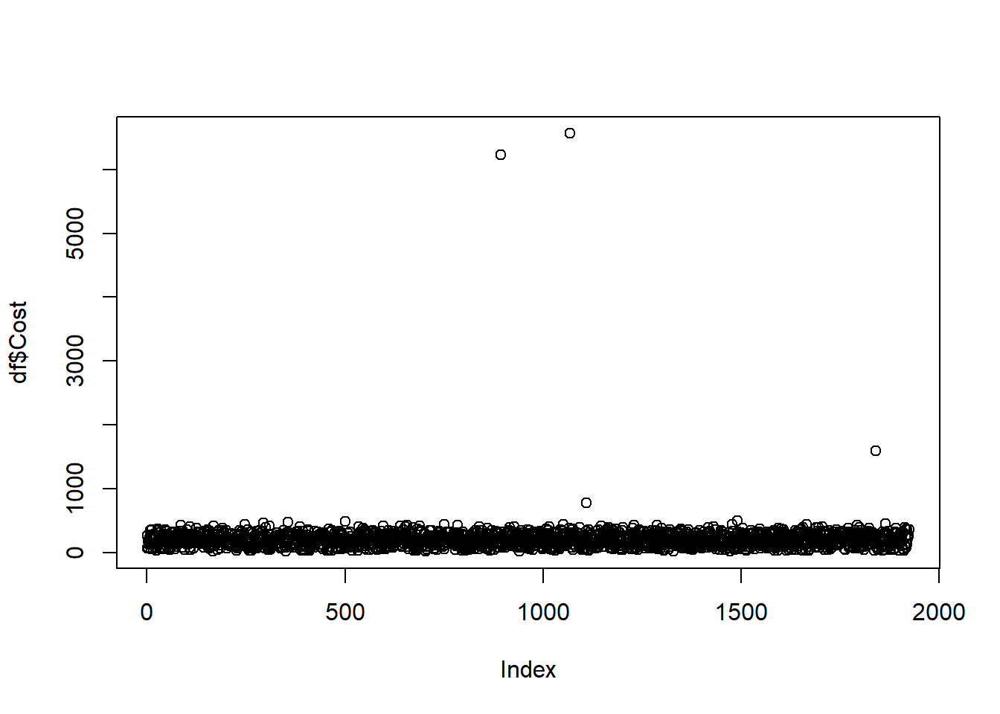
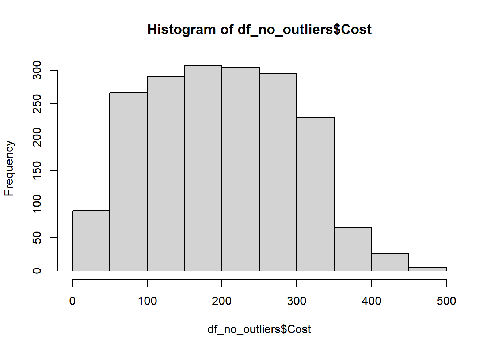
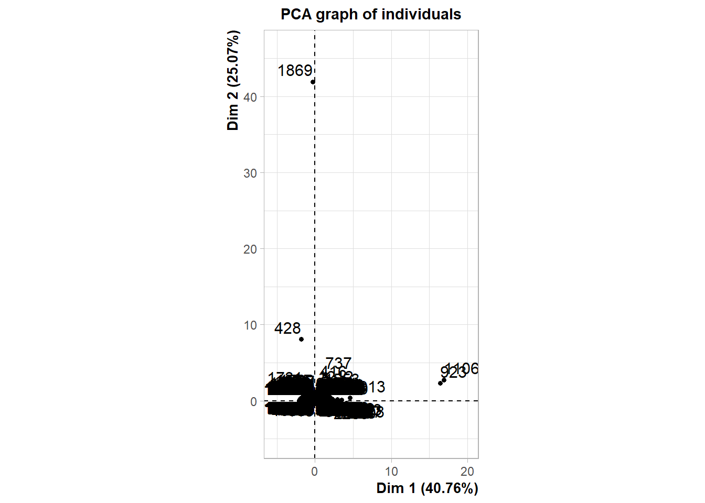
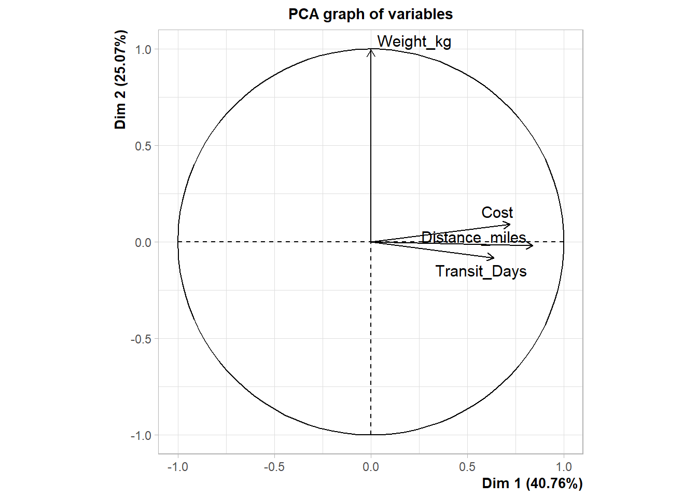
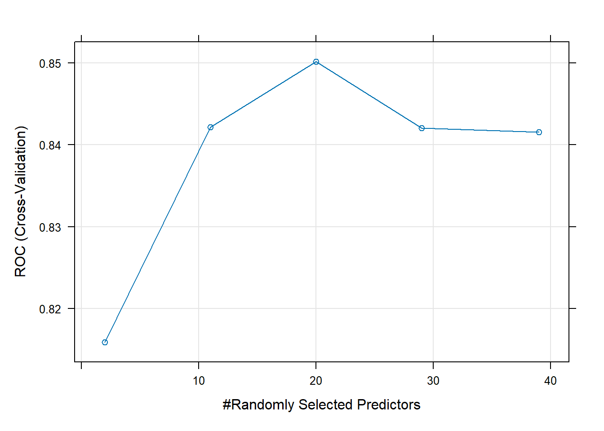

df <- subset(df, select = -c(Shipment_ID))Package Delay Report
Introduction
I chose the dataset off of Kaggle, published in August by Shahriar Kabir and titled “US Logistics Performance Dataset:Simulated Shipment Data for Cost Reduction & Delivery Reliability”. This was for a class project, and I browsed through Kaggle simply looking for something business-related that had an easy problem to answer. After seeing the “Status” column for this one, I knew this would be the one.
Thus, I set out to answer the question of inferring what variables affect package status, or in other words, what factors indicate a package will end up delayed or lost instead of it arriving on-time.
Data, cleaning & pre-processing
At first, there were 2,000 samples and 9 predictors. 3 were categorical, 3 were numeric, and 3 were in a strange limbo of uselessness. The three limbo values were the shipment ID, the shipment date, and the delivery date. I removed the shipment ID, and a peer used the shipment date and delivery date to find the amount of days spent in transit (need to include in report, but shall hide).
Also, we removed some samples from the data set, namely, packages that were “In Transit” as opposed to delayed, delivered, or lost. Their final outcome had yet to be known, so it was overall useless for inference in this matter. Then, I made a binary between “Delayed or Lost” and “Delivered” to use later for logistic regression and to make the confusion matrix simpler.
df = subset(df, tolower(Status) != "in transit") #deleting "in transit" samples
df$D_or_L <- ifelse(tolower(df$Status) %in% c("delayed", "lost"), 1, 0)
# ^ makes the binary
df <- subset(df, select = -Status)Next, I fixed the issue of there being N/A values present under the cost predictor. I planned to just replace it with the mean or median, but I couldn’t even tell what I was supposed to do due to the extreme outliers skewing the visibility of the cost histogram. So, I removed the outliers and tested cost for normality before I could proceed.
plot(df$Cost)
Q1 <- quantile(df$Cost, 0.25, na.rm = TRUE)
Q3 <- quantile(df$Cost, 0.75, na.rm = TRUE)
IQR <- Q3 - Q1
lower <- Q1 - 1.5 * IQR
upper <- Q3 + 1.5 * IQR
df_no_outliers <- subset(df, Cost >= lower & Cost <= upper)
hist(df_no_outliers$Cost)
shapiro.test(df_no_outliers$Cost)
Shapiro-Wilk normality test
data: df_no_outliers$Cost
W = 0.97874, p-value = 4.232e-16df$Cost[is.na(df$Cost)] = median(df$Cost, na.rm = TRUE)Seeing that the data was non-normal, I replaced the N/A values with the Cost median.
Then, I added the Weekday value, which took the date of shipment and said what day of the week it was. I was curious if packages shipped on Fridays or Mondays had different outcomes, and wanted to test it.
df$Delivery_Date <- as.Date(df$Delivery_Date, origin = "1970-01-01")
df$Shipment_Date <- as.Date(df$Shipment_Date, origin = "1970-01-01")
df$ShipWeekday <- factor(
weekdays(df$Shipment_Date, abbreviate = FALSE),
levels = c("Monday","Tuesday","Wednesday","Thursday","Friday","Saturday","Sunday"),
ordered = FALSE
)Then, I reordered the columns to be more contiguous—“Delayed or Lost” in the first column, with categorical variables all in one spot, then the dates, and then all the numeric variables.
df <- df[, c("D_or_L", "Origin_Warehouse", "Destination",
"Carrier", "ShipWeekday", "Shipment_Date", "Delivery_Date",
"Transit_Days", "Distance_miles", "Weight_kg", "Cost")]Principal Component Analysis (PCA)
I separated out the numeric components, and then ran PCA to see if I could reduce dimensionality somehow, or just to see what was there. This showed that Transit Days, Cost, and Distance were all part of the first dimension, which represented 41% of the variability of the numeric-only model, followed by Weight, which represented another 25%.
dfnumeric = df[8:11]
pc_result = prcomp(dfnumeric, scale. = TRUE)
PCA(dfnumeric, scale= TRUE)

**Results for the Principal Component Analysis (PCA)**
The analysis was performed on 1924 individuals, described by 4 variables
*The results are available in the following objects:
name description
1 "$eig" "eigenvalues"
2 "$var" "results for the variables"
3 "$var$coord" "coord. for the variables"
4 "$var$cor" "correlations variables - dimensions"
5 "$var$cos2" "cos2 for the variables"
6 "$var$contrib" "contributions of the variables"
7 "$ind" "results for the individuals"
8 "$ind$coord" "coord. for the individuals"
9 "$ind$cos2" "cos2 for the individuals"
10 "$ind$contrib" "contributions of the individuals"
11 "$call" "summary statistics"
12 "$call$centre" "mean of the variables"
13 "$call$ecart.type" "standard error of the variables"
14 "$call$row.w" "weights for the individuals"
15 "$call$col.w" "weights for the variables" The PCA was just to look around, though, not to find anything significant.
Logistic Regression
So, first I made a logistic regression of the categorical variables only, to see if anything came out significant.
df$Shipment_Date <- as.Date(df$Shipment_Date, format = "%Y-%m-%d") #idk
##########################################################
####LOGISIC REGRESSION
CatReg <- glm(D_or_L ~ Origin_Warehouse + Destination + Carrier + ShipWeekday,
data = df, family = binomial)
summary(CatReg) #NOTE: WArehouse_NYC and Boston have pval low. Also UPS. but
Call:
glm(formula = D_or_L ~ Origin_Warehouse + Destination + Carrier +
ShipWeekday, family = binomial, data = df)
Coefficients:
Estimate Std. Error z value Pr(>|z|)
(Intercept) -2.107698 0.446388 -4.722 2.34e-06 ***
Origin_WarehouseWarehouse_BOS -0.240388 0.300844 -0.799 0.4243
Origin_WarehouseWarehouse_CHI -0.297000 0.300163 -0.989 0.3224
Origin_WarehouseWarehouse_DEN -0.447186 0.311175 -1.437 0.1507
Origin_WarehouseWarehouse_HOU -0.060485 0.282164 -0.214 0.8303
Origin_WarehouseWarehouse_LA -0.254328 0.291911 -0.871 0.3836
Origin_WarehouseWarehouse_MIA 0.001891 0.285960 0.007 0.9947
Origin_WarehouseWarehouse_NYC -0.722665 0.353078 -2.047 0.0407 *
Origin_WarehouseWarehouse_SEA -0.496021 0.316620 -1.567 0.1172
Origin_WarehouseWarehouse_SF -0.130943 0.282588 -0.463 0.6431
DestinationBoston 0.920077 0.398338 2.310 0.0209 *
DestinationChicago 0.207933 0.415892 0.500 0.6171
DestinationDallas 0.307388 0.423575 0.726 0.4680
DestinationDenver 0.241659 0.426214 0.567 0.5707
DestinationDetroit 0.732620 0.393884 1.860 0.0629 .
DestinationHouston 0.452529 0.423549 1.068 0.2853
DestinationLos Angeles 0.417138 0.422710 0.987 0.3237
DestinationMiami 0.102510 0.450699 0.227 0.8201
DestinationMinneapolis 0.389828 0.407613 0.956 0.3389
DestinationNew York 0.688170 0.410897 1.675 0.0940 .
DestinationPhoenix 0.457846 0.404243 1.133 0.2574
DestinationPortland 0.383512 0.411888 0.931 0.3518
DestinationSan Francisco 0.392939 0.422206 0.931 0.3520
DestinationSeattle 0.583731 0.424817 1.374 0.1694
CarrierDHL -0.219749 0.241110 -0.911 0.3621
CarrierFedEx -0.463487 0.252928 -1.832 0.0669 .
CarrierLaserShip -0.404738 0.244402 -1.656 0.0977 .
CarrierOnTrac -0.465785 0.249498 -1.867 0.0619 .
CarrierUPS -0.653647 0.273248 -2.392 0.0168 *
CarrierUSPS -0.414563 0.250059 -1.658 0.0973 .
ShipWeekdayTuesday 0.635491 0.270873 2.346 0.0190 *
ShipWeekdayWednesday 0.238237 0.280683 0.849 0.3960
ShipWeekdayThursday 0.206236 0.292609 0.705 0.4809
ShipWeekdayFriday 0.530619 0.272265 1.949 0.0513 .
ShipWeekdaySaturday 0.356407 0.279808 1.274 0.2028
ShipWeekdaySunday 0.338133 0.286847 1.179 0.2385
---
Signif. codes: 0 '***' 0.001 '**' 0.01 '*' 0.05 '.' 0.1 ' ' 1
(Dispersion parameter for binomial family taken to be 1)
Null deviance: 1463.4 on 1923 degrees of freedom
Residual deviance: 1425.8 on 1888 degrees of freedom
AIC: 1497.8
Number of Fisher Scoring iterations: 5The NYC warehouse, Boston as a destination, and the carrier UPS all seemed significant, but with a model this crowded it was strange and hard to tell just what was going on. To confirm, I ran some tests below (with some pre-processing to match), but was still left confused.
uglydf = df #so df isnt polluted by bs columns
# predicted probabilities
preds <- augment(CatReg, type.predict = "response", newdata = df)
uglydf$pred_prob <- preds$.fitted
# average predicted prob by destination
uglydf %>%
group_by(Destination) %>%
summarise(mean_delay_prob = mean(pred_prob))# A tibble: 15 × 2
Destination mean_delay_prob
<fct> <dbl>
1 Atlanta 0.0840
2 Boston 0.196
3 Chicago 0.108
4 Dallas 0.114
5 Denver 0.102
6 Detroit 0.170
7 Houston 0.125
8 Los Angeles 0.125
9 Miami 0.0932
10 Minneapolis 0.126
11 New York 0.158
12 Phoenix 0.135
13 Portland 0.118
14 San Francisco 0.122
15 Seattle 0.142 #### HOW LIKELY IT IS TO GET DELAY/LOST IN EACH DESTINATION LOCATION!!!
#low is 8%, high is 20% (Boston)
# average predicted prob by WAREHOUSE!!!!!!!!!!
uglydf %>%
group_by(Origin_Warehouse) %>%
summarise(mean_delay_prob = mean(pred_prob))# A tibble: 10 × 2
Origin_Warehouse mean_delay_prob
<fct> <dbl>
1 Warehouse_ATL 0.157
2 Warehouse_BOS 0.124
3 Warehouse_CHI 0.119
4 Warehouse_DEN 0.106
5 Warehouse_HOU 0.146
6 Warehouse_LA 0.124
7 Warehouse_MIA 0.153
8 Warehouse_NYC 0.0788
9 Warehouse_SEA 0.103
10 Warehouse_SF 0.146 ### low of 8% high of 16%
#if this does nothing, its bc it takes forever to load
#basically inconclusive, high p values. get rid of it? idkThen I changed course for a bit and tried out logistic regression using only the numeric predictors. As expected, Transit Days was highly significant, but I had issues with that (more later). I also found that Distance was significant, but to less of a degree.
NumReg <- glm(D_or_L ~ Weight_kg + Distance_miles + Cost + Transit_Days,
data = df, family = binomial)
summary(NumReg) #pval low for transit days(duh) and for distance_miles
Call:
glm(formula = D_or_L ~ Weight_kg + Distance_miles + Cost + Transit_Days,
family = binomial, data = df)
Coefficients:
Estimate Std. Error z value Pr(>|z|)
(Intercept) -3.2603740 0.2053619 -15.876 < 2e-16 ***
Weight_kg -0.0003136 0.0014098 -0.222 0.824
Distance_miles -0.0008703 0.0001809 -4.812 1.49e-06 ***
Cost -0.0003432 0.0009699 -0.354 0.723
Transit_Days 0.4191621 0.0262958 15.940 < 2e-16 ***
---
Signif. codes: 0 '***' 0.001 '**' 0.01 '*' 0.05 '.' 0.1 ' ' 1
(Dispersion parameter for binomial family taken to be 1)
Null deviance: 1463.4 on 1923 degrees of freedom
Residual deviance: 1021.2 on 1919 degrees of freedom
AIC: 1031.2
Number of Fisher Scoring iterations: 6Still wondering what was up with UPS, Boston, and NYC, I put the predictors together to see if my answer this time was different.
AllReg <- glm(D_or_L ~ Weight_kg + Distance_miles + Cost + Transit_Days +
Origin_Warehouse + Destination + Carrier + ShipWeekday,
data = df, family = binomial)
summary(AllReg)
Call:
glm(formula = D_or_L ~ Weight_kg + Distance_miles + Cost + Transit_Days +
Origin_Warehouse + Destination + Carrier + ShipWeekday, family = binomial,
data = df)
Coefficients:
Estimate Std. Error z value Pr(>|z|)
(Intercept) -3.6766846 0.5893865 -6.238 4.43e-10 ***
Weight_kg -0.0004018 0.0018193 -0.221 0.8252
Distance_miles -0.0009359 0.0001646 -5.684 1.31e-08 ***
Cost -0.0001847 0.0007081 -0.261 0.7943
Transit_Days 0.4216901 0.0269204 15.664 < 2e-16 ***
Origin_WarehouseWarehouse_BOS -0.0196136 0.3778913 -0.052 0.9586
Origin_WarehouseWarehouse_CHI -0.1268439 0.3817438 -0.332 0.7397
Origin_WarehouseWarehouse_DEN 0.0025067 0.3799051 0.007 0.9947
Origin_WarehouseWarehouse_HOU 0.1671347 0.3605757 0.464 0.6430
Origin_WarehouseWarehouse_LA -0.1945669 0.3723975 -0.522 0.6013
Origin_WarehouseWarehouse_MIA 0.0461490 0.3787269 0.122 0.9030
Origin_WarehouseWarehouse_NYC -0.5677237 0.4599029 -1.234 0.2170
Origin_WarehouseWarehouse_SEA -0.3676569 0.4104222 -0.896 0.3704
Origin_WarehouseWarehouse_SF 0.2037305 0.3569044 0.571 0.5681
DestinationBoston 0.8393284 0.4946626 1.697 0.0897 .
DestinationChicago 0.3544202 0.4957359 0.715 0.4746
DestinationDallas 0.4218152 0.5116634 0.824 0.4097
DestinationDenver 0.6078049 0.5035219 1.207 0.2274
DestinationDetroit 0.7157190 0.4816940 1.486 0.1373
DestinationHouston 0.7599830 0.5033920 1.510 0.1311
DestinationLos Angeles 0.2525614 0.5452497 0.463 0.6432
DestinationMiami -0.0637446 0.5750218 -0.111 0.9117
DestinationMinneapolis 0.5543726 0.4909515 1.129 0.2588
DestinationNew York 0.7046304 0.5001089 1.409 0.1588
DestinationPhoenix 0.2044209 0.4958897 0.412 0.6802
DestinationPortland 0.5711333 0.4903905 1.165 0.2442
DestinationSan Francisco 0.4453125 0.5071199 0.878 0.3799
DestinationSeattle 0.5502214 0.5216724 1.055 0.2916
CarrierDHL -0.3950203 0.3077502 -1.284 0.1993
CarrierFedEx -0.6692550 0.3267052 -2.048 0.0405 *
CarrierLaserShip -0.2215526 0.2932277 -0.756 0.4499
CarrierOnTrac -0.6285962 0.3148428 -1.997 0.0459 *
CarrierUPS -0.5936007 0.3316049 -1.790 0.0734 .
CarrierUSPS -0.3143659 0.3095012 -1.016 0.3098
ShipWeekdayTuesday 0.8048215 0.3379797 2.381 0.0173 *
ShipWeekdayWednesday 0.4022871 0.3463999 1.161 0.2455
ShipWeekdayThursday 0.2891490 0.3689413 0.784 0.4332
ShipWeekdayFriday 0.5009009 0.3424220 1.463 0.1435
ShipWeekdaySaturday 0.4592029 0.3494373 1.314 0.1888
ShipWeekdaySunday 0.3090635 0.3664374 0.843 0.3990
---
Signif. codes: 0 '***' 0.001 '**' 0.01 '*' 0.05 '.' 0.1 ' ' 1
(Dispersion parameter for binomial family taken to be 1)
Null deviance: 1463.37 on 1923 degrees of freedom
Residual deviance: 993.25 on 1884 degrees of freedom
AIC: 1073.3
Number of Fisher Scoring iterations: 6Curiously, FedEx and OnTrac, two carriers, became significant, but all three other predictors lost their significance with this model. That puzzled me, so I sought to get to the bottom of it with various flags. I included the code, but needless to say, it was a bust, and I gave up trying to use specific carriers and warehouses as anything significant in terms of model impact.
uglydf$UPS_flag <- ifelse(df$Carrier == "UPS", 1, 0)
uglydf$NYC_flag <- ifelse(df$Origin_Warehouse == "Warehouse_NYC", 1, 0)
uglydf$Boston_flag = ifelse(df$Destination == "Boston", 1, 0)
uglydf$Tuesday_flag = ifelse(df$ShipWeekday == "Tuesday", 1, 0)
#testing w another regression w the flagts to see if "rly significant"
model_flags <- glm(D_or_L ~ UPS_flag + NYC_flag + Boston_flag + Tuesday_flag,
data = uglydf, family = binomial)
summary(model_flags) #only Boston still significant!?
# Get 95% confidence intervals for these hoes. IF THE LEFT IS OVER 1 OR THE
#RIGHT IS UNDER 1 THEN ITS SIGNIFICANT
exp(confint(model_flags)) #NYC, BostonWaiting for profiling to be done...exp(confint(AllReg)) #distance, transit days(duh), Tuesday, OnTrac, FedExWaiting for profiling to be done...Warning: glm.fit: fitted probabilities numerically 0 or 1 occurred
Warning: glm.fit: fitted probabilities numerically 0 or 1 occurred
Warning: glm.fit: fitted probabilities numerically 0 or 1 occurred
Warning: glm.fit: fitted probabilities numerically 0 or 1 occurred#yes the results are different; no idkThen I tried cross-validating it to see if I could get anything good out of it. I chose 5 folds to make it easy and went for it, using all variables.
set.seed(2253221)
cv_ctrl = trainControl(method = "cv", number = 5) # 5-fold CV
df$D_or_L <- as.factor(df$D_or_L)
cvmodel = train(
D_or_L ~ Weight_kg + Distance_miles + Cost + Transit_Days +
Origin_Warehouse + Destination + Carrier + ShipWeekday,
data = df,
method = "glm",
family = "binomial",
trControl = cv_ctrl
)
cvmodelGeneralized Linear Model
1924 samples
8 predictor
2 classes: '0', '1'
No pre-processing
Resampling: Cross-Validated (5 fold)
Summary of sample sizes: 1539, 1539, 1540, 1539, 1539
Resampling results:
Accuracy Kappa
0.9246388 0.5730275Accuracy and Kappa were both great, which was nice after the frustrating adventure so far. Realizing the model wasn’t so bad, I ran a stepwise function to see if I could reduce the parameters and keep some accuracy.
stepmodel = stats::step(AllReg_clean, direction = "both") ##############stepwiseStart: AIC=1073.25
D_or_L ~ Weight_kg + Distance_miles + Cost + Transit_Days + Origin_Warehouse +
Destination + Carrier + ShipWeekdayWarning: glm.fit: fitted probabilities numerically 0 or 1 occurred Df Deviance AIC
- Destination 14 1001.47 1053.5
- Origin_Warehouse 9 998.87 1060.9
- ShipWeekday 6 999.89 1067.9
- Carrier 6 1000.27 1068.3
- Weight_kg 1 993.34 1071.3
- Cost 1 993.35 1071.3
<none> 993.25 1073.2
- Distance_miles 1 1007.09 1085.1
- Transit_Days 1 1423.65 1501.7
Step: AIC=1053.47
D_or_L ~ Weight_kg + Distance_miles + Cost + Transit_Days + Origin_Warehouse +
Carrier + ShipWeekdayWarning: glm.fit: fitted probabilities numerically 0 or 1 occurred Df Deviance AIC
- Origin_Warehouse 9 1007.06 1041.1
- ShipWeekday 6 1007.76 1047.8
- Carrier 6 1008.36 1048.4
- Weight_kg 1 1001.53 1051.5
- Cost 1 1001.55 1051.5
<none> 1001.47 1053.5
- Distance_miles 1 1014.89 1064.9
+ Destination 14 993.25 1073.2
- Transit_Days 1 1435.62 1485.6
Step: AIC=1041.06
D_or_L ~ Weight_kg + Distance_miles + Cost + Transit_Days + Carrier +
ShipWeekdayWarning: glm.fit: fitted probabilities numerically 0 or 1 occurred Df Deviance AIC
- ShipWeekday 6 1013.20 1035.2
- Carrier 6 1015.09 1037.1
- Weight_kg 1 1007.12 1039.1
- Cost 1 1007.17 1039.2
<none> 1007.06 1041.1
- Distance_miles 1 1020.27 1052.3
+ Origin_Warehouse 9 1001.47 1053.5
+ Destination 14 998.87 1060.9
- Transit_Days 1 1445.52 1477.5
Step: AIC=1035.2
D_or_L ~ Weight_kg + Distance_miles + Cost + Transit_Days + CarrierWarning: glm.fit: fitted probabilities numerically 0 or 1 occurred Df Deviance AIC
- Carrier 6 1021.2 1031.2
- Weight_kg 1 1013.3 1033.3
- Cost 1 1013.3 1033.3
<none> 1013.2 1035.2
+ ShipWeekday 6 1007.1 1041.1
- Distance_miles 1 1026.4 1046.4
+ Origin_Warehouse 9 1007.8 1047.8
+ Destination 14 1005.2 1055.2
- Transit_Days 1 1453.2 1473.2
Step: AIC=1031.2
D_or_L ~ Weight_kg + Distance_miles + Cost + Transit_DaysWarning: glm.fit: fitted probabilities numerically 0 or 1 occurred Df Deviance AIC
- Weight_kg 1 1021.3 1029.3
- Cost 1 1021.4 1029.4
<none> 1021.2 1031.2
+ Carrier 6 1013.2 1035.2
+ ShipWeekday 6 1015.1 1037.1
- Distance_miles 1 1032.7 1040.7
+ Origin_Warehouse 9 1014.7 1042.7
+ Destination 14 1013.3 1051.3
- Transit_Days 1 1462.0 1470.0
Step: AIC=1029.28
D_or_L ~ Distance_miles + Cost + Transit_DaysWarning: glm.fit: fitted probabilities numerically 0 or 1 occurred Df Deviance AIC
- Cost 1 1021.5 1027.5
<none> 1021.3 1029.3
+ Weight_kg 1 1021.2 1031.2
+ Carrier 6 1013.3 1033.3
+ ShipWeekday 6 1015.2 1035.2
- Distance_miles 1 1032.7 1038.7
+ Origin_Warehouse 9 1014.8 1040.8
+ Destination 14 1013.4 1049.4
- Transit_Days 1 1462.2 1468.2
Step: AIC=1027.54
D_or_L ~ Distance_miles + Transit_Days
Df Deviance AIC
<none> 1021.5 1027.5
+ Cost 1 1021.3 1029.3
+ Weight_kg 1 1021.4 1029.4
+ Carrier 6 1013.4 1031.4
+ ShipWeekday 6 1015.4 1033.4
+ Origin_Warehouse 9 1015.0 1039.0
+ Destination 14 1013.7 1047.7
- Distance_miles 1 1072.8 1076.8
- Transit_Days 1 1462.3 1466.3summary(stepmodel)
Call:
glm(formula = D_or_L ~ Distance_miles + Transit_Days, family = binomial,
data = df_clean)
Coefficients:
Estimate Std. Error z value Pr(>|z|)
(Intercept) -3.2822669 0.1989169 -16.501 < 2e-16 ***
Distance_miles -0.0009146 0.0001336 -6.847 7.52e-12 ***
Transit_Days 0.4191639 0.0263054 15.935 < 2e-16 ***
---
Signif. codes: 0 '***' 0.001 '**' 0.01 '*' 0.05 '.' 0.1 ' ' 1
(Dispersion parameter for binomial family taken to be 1)
Null deviance: 1463.4 on 1923 degrees of freedom
Residual deviance: 1021.5 on 1921 degrees of freedom
AIC: 1027.5
Number of Fisher Scoring iterations: 5As the summary says, only two variables are needed in the model, Distance and Transit Days. Therefore, the improved model for predicting package delays and losses would be:
\[ DelayedOrLost = -3.2579491 + .4139328(TransitDays) - .0009309(DistanceMiles) \]
Nice and succinct. However, there’s a problem: of COURSE Transit Days is correlated with there being a delay or loss in package, because being in transit more days and being delayed; it’s a data leakage/target leakage. So, I removed Transit Days from the dataset to try and determine what else might be a significant predictor:
NoTransit = glm(
D_or_L ~ Weight_kg + Distance_miles + Cost +
Origin_Warehouse + Destination + Carrier + ShipWeekday,
data = df,
family = binomial
)
summary(NoTransit)
Call:
glm(formula = D_or_L ~ Weight_kg + Distance_miles + Cost + Origin_Warehouse +
Destination + Carrier + ShipWeekday, family = binomial, data = df)
Coefficients:
Estimate Std. Error z value Pr(>|z|)
(Intercept) -1.9259749 0.4644150 -4.147 3.37e-05 ***
Weight_kg -0.0004024 0.0011434 -0.352 0.7249
Distance_miles -0.0001185 0.0001214 -0.976 0.3288
Cost -0.0001349 0.0005149 -0.262 0.7934
Origin_WarehouseWarehouse_BOS -0.2230949 0.3012779 -0.740 0.4590
Origin_WarehouseWarehouse_CHI -0.3081609 0.3004967 -1.026 0.3051
Origin_WarehouseWarehouse_DEN -0.4525677 0.3113866 -1.453 0.1461
Origin_WarehouseWarehouse_HOU -0.0525546 0.2823104 -0.186 0.8523
Origin_WarehouseWarehouse_LA -0.2569495 0.2922122 -0.879 0.3792
Origin_WarehouseWarehouse_MIA 0.0112593 0.2862008 0.039 0.9686
Origin_WarehouseWarehouse_NYC -0.7296010 0.3531617 -2.066 0.0388 *
Origin_WarehouseWarehouse_SEA -0.4820636 0.3170140 -1.521 0.1284
Origin_WarehouseWarehouse_SF -0.1249702 0.2827180 -0.442 0.6585
DestinationBoston 0.9705347 0.3999365 2.427 0.0152 *
DestinationChicago 0.2202887 0.4162486 0.529 0.5967
DestinationDallas 0.3253840 0.4241059 0.767 0.4429
DestinationDenver 0.2304620 0.4265147 0.540 0.5890
DestinationDetroit 0.7392355 0.3943055 1.875 0.0608 .
DestinationHouston 0.4693084 0.4241306 1.107 0.2685
DestinationLos Angeles 0.4305887 0.4231828 1.018 0.3089
DestinationMiami 0.1143389 0.4511480 0.253 0.7999
DestinationMinneapolis 0.4061410 0.4079814 0.995 0.3195
DestinationNew York 0.7006087 0.4111125 1.704 0.0883 .
DestinationPhoenix 0.4578117 0.4047136 1.131 0.2580
DestinationPortland 0.3942995 0.4123233 0.956 0.3389
DestinationSan Francisco 0.4103794 0.4229328 0.970 0.3319
DestinationSeattle 0.6015329 0.4254087 1.414 0.1574
CarrierDHL -0.2182461 0.2418029 -0.903 0.3667
CarrierFedEx -0.4542240 0.2535636 -1.791 0.0732 .
CarrierLaserShip -0.4174996 0.2449453 -1.704 0.0883 .
CarrierOnTrac -0.4823652 0.2500167 -1.929 0.0537 .
CarrierUPS -0.6526544 0.2738680 -2.383 0.0172 *
CarrierUSPS -0.4238265 0.2504424 -1.692 0.0906 .
ShipWeekdayTuesday 0.6272827 0.2711027 2.314 0.0207 *
ShipWeekdayWednesday 0.2309549 0.2810250 0.822 0.4112
ShipWeekdayThursday 0.1994561 0.2932497 0.680 0.4964
ShipWeekdayFriday 0.5233315 0.2724820 1.921 0.0548 .
ShipWeekdaySaturday 0.3529686 0.2800912 1.260 0.2076
ShipWeekdaySunday 0.3352959 0.2870846 1.168 0.2428
---
Signif. codes: 0 '***' 0.001 '**' 0.01 '*' 0.05 '.' 0.1 ' ' 1
(Dispersion parameter for binomial family taken to be 1)
Null deviance: 1463.4 on 1923 degrees of freedom
Residual deviance: 1423.6 on 1885 degrees of freedom
AIC: 1501.6
Number of Fisher Scoring iterations: 5And ran a cross-validation, with necessary data-wrangling to make it work:
set.seed(2253221)
NOTRANSIT.ctrl = trainControl(
method = "cv",
number = 8,
sampling = "up",
savePredictions = "final",
classProbs = TRUE, #lets me do other stuff idk
)
#aside stuff so the cv model works
uglydf$D_or_L <- as.character(df$D_or_L)
uglydf$D_or_L[df$D_or_L %in% c("0", 0)] <- "OnTime"
uglydf$D_or_L[df$D_or_L %in% c("1", 1)] <- "Delayed"
NOTRANSIT.cvmodel = train(
D_or_L ~ Weight_kg + Distance_miles + Cost +
Origin_Warehouse + Destination + Carrier + ShipWeekday,
data = uglydf, #############################################
method = "glm",
family = "binomial",
trControl = NOTRANSIT.ctrl
)
NOTRANSIT.cvmodel Generalized Linear Model
1924 samples
7 predictor
2 classes: 'Delayed', 'OnTime'
No pre-processing
Resampling: Cross-Validated (8 fold)
Summary of sample sizes: 1683, 1683, 1684, 1683, 1684, 1683, ...
Addtional sampling using up-sampling
Resampling results:
Accuracy Kappa
0.5535313 0.004961356As you can see, the accuracy is way down compared to the model that included Transit Days. A meager 55% is looking very bleak. I ran the step-wise again to make sure my sinking suspicions were correct:
stepNOTRANSIT = stats::step(NoTransit, direction = "both")Start: AIC=1501.65
D_or_L ~ Weight_kg + Distance_miles + Cost + Origin_Warehouse +
Destination + Carrier + ShipWeekday
Df Deviance AIC
- Destination 14 1435.6 1485.6
- Origin_Warehouse 9 1432.8 1492.8
- ShipWeekday 6 1431.2 1497.2
- Carrier 6 1431.5 1497.5
- Cost 1 1423.7 1499.7
- Weight_kg 1 1423.9 1499.9
- Distance_miles 1 1424.4 1500.4
<none> 1423.7 1501.7
Step: AIC=1485.62
D_or_L ~ Weight_kg + Distance_miles + Cost + Origin_Warehouse +
Carrier + ShipWeekday
Df Deviance AIC
- Origin_Warehouse 9 1445.5 1477.5
- ShipWeekday 6 1443.4 1481.4
- Carrier 6 1444.2 1482.2
- Cost 1 1435.7 1483.7
- Weight_kg 1 1435.7 1483.7
- Distance_miles 1 1436.2 1484.2
<none> 1435.6 1485.6
+ Destination 14 1423.7 1501.7
Step: AIC=1477.52
D_or_L ~ Weight_kg + Distance_miles + Cost + Carrier + ShipWeekday
Df Deviance AIC
- ShipWeekday 6 1453.2 1473.2
- Carrier 6 1454.4 1474.4
- Cost 1 1445.5 1475.5
- Weight_kg 1 1445.6 1475.6
- Distance_miles 1 1446.1 1476.1
<none> 1445.5 1477.5
+ Origin_Warehouse 9 1435.6 1485.6
+ Destination 14 1432.8 1492.8
Step: AIC=1473.15
D_or_L ~ Weight_kg + Distance_miles + Cost + Carrier
Df Deviance AIC
- Carrier 6 1462.0 1470.0
- Cost 1 1453.2 1471.2
- Weight_kg 1 1453.3 1471.3
- Distance_miles 1 1453.7 1471.7
<none> 1453.2 1473.2
+ ShipWeekday 6 1445.5 1477.5
+ Origin_Warehouse 9 1443.4 1481.4
+ Destination 14 1440.2 1488.2
Step: AIC=1470.03
D_or_L ~ Weight_kg + Distance_miles + Cost
Df Deviance AIC
- Cost 1 1462.1 1468.1
- Weight_kg 1 1462.2 1468.2
- Distance_miles 1 1462.5 1468.5
<none> 1462.0 1470.0
+ Carrier 6 1453.2 1473.2
+ ShipWeekday 6 1454.4 1474.4
+ Origin_Warehouse 9 1452.0 1478.0
+ Destination 14 1448.4 1484.4
Step: AIC=1468.14
D_or_L ~ Weight_kg + Distance_miles
Df Deviance AIC
- Weight_kg 1 1462.3 1466.3
- Distance_miles 1 1463.2 1467.2
<none> 1462.1 1468.1
+ Cost 1 1462.0 1470.0
+ Carrier 6 1453.2 1471.2
+ ShipWeekday 6 1454.5 1472.5
+ Origin_Warehouse 9 1452.1 1476.1
+ Destination 14 1448.6 1482.6
Step: AIC=1466.31
D_or_L ~ Distance_miles
Df Deviance AIC
- Distance_miles 1 1463.4 1465.4
<none> 1462.3 1466.3
+ Weight_kg 1 1462.1 1468.1
+ Cost 1 1462.2 1468.2
+ Carrier 6 1453.3 1469.3
+ ShipWeekday 6 1454.6 1470.6
+ Origin_Warehouse 9 1452.3 1474.3
+ Destination 14 1448.9 1480.9
Step: AIC=1465.37
D_or_L ~ 1
Df Deviance AIC
<none> 1463.4 1465.4
+ Distance_miles 1 1462.3 1466.3
+ Cost 1 1462.6 1466.6
+ Weight_kg 1 1463.2 1467.2
+ Carrier 6 1454.6 1468.6
+ ShipWeekday 6 1455.6 1469.6
+ Origin_Warehouse 9 1453.5 1473.5
+ Destination 14 1450.4 1480.4summary(stepNOTRANSIT)
Call:
glm(formula = D_or_L ~ 1, family = binomial, data = df)
Coefficients:
Estimate Std. Error z value Pr(>|z|)
(Intercept) -1.92938 0.06851 -28.16 <2e-16 ***
---
Signif. codes: 0 '***' 0.001 '**' 0.01 '*' 0.05 '.' 0.1 ' ' 1
(Dispersion parameter for binomial family taken to be 1)
Null deviance: 1463.4 on 1923 degrees of freedom
Residual deviance: 1463.4 on 1923 degrees of freedom
AIC: 1465.4
Number of Fisher Scoring iterations: 4Yup. Not a single variable makes it to the final model—nothing is significant, and it’s a wash. Therefore, regardless of the integrity of keeping data leakage in the model, that’s our best bet we can achieve with logistic regression. So, let’s have a hack at something else: LDA
Linear Discriminant Analysis
I unfortunately had to run it manually since every single regular method wasn’t working properly due to package issues. The code is 141 lines so I’m hiding it, but here’s the output:
Show R Code
library(MASS) # For lda()
library(pROC) # For roc()
# --- PASTE THIS CHUNK *BEFORE* YOUR CV LOOP ---
# 1. Dummy-code categoricals
dmy = dummyVars(~ Origin_Warehouse + Destination + Carrier + ShipWeekday,
data = df, fullRank = TRUE)
Xcat = predict(dmy, newdata = df)
# 2. Assemble modeling frame
df_lda = cbind(
D_or_L = df$D_or_L,
Weight_kg = df$Weight_kg,
Distance_miles = df$Distance_miles,
Cost = df$Cost,
Xcat
)
df_lda = as.data.frame(df_lda)
df_lda = na.omit(df_lda)
# 3. Normalize target labels for LDA
df_lda$D_or_L = as.character(df_lda$D_or_L)
df_lda$D_or_L[df_lda$D_or_L %in% c("2", 2, "Lost", "Delayed/Lost", "Delayed")] = "Delayed"
df_lda$D_or_L[df_lda$D_or_L %in% c("1", 1, "OnTime", "on time", "ontime")] = "OnTime"
df_lda$D_or_L = factor(df_lda$D_or_L, levels = c("Delayed", "OnTime"))
# 4. Assign prior probabilities
lda_prior = c(0.5, 0.5)
names(lda_prior) = levels(df_lda$D_or_L)
# --- END OF PREP CHUNK ---
set.seed(2253221)
k_folds <- 8
# Create fold assignments
folds <- cut(seq(1, nrow(df_lda)), breaks = k_folds, labels = FALSE)
# Randomly shuffle the assignments
folds <- sample(folds)
# Create a data frame to store the metrics from each fold
# --- UPDATED to include Accuracy and Kappa ---
all_metrics <- data.frame(
ROC = numeric(),
Sens = numeric(),
Spec = numeric(),
Accuracy = numeric(),
Kappa = numeric()
)
print("Starting manual 8-fold CV for LDA...")[1] "Starting manual 8-fold CV for LDA..."Show R Code
# --- Start the CV loop ---
for (i in 1:k_folds) {
# 1. Split data into training and testing
test_indices <- which(folds == i)
test_data <- df_lda[test_indices, ]
train_data <- df_lda[-test_indices, ]
# 2. Fit the LDA model directly (no caret)
lda_fit <- MASS::lda(
D_or_L ~ .,
data = train_data,
prior = lda_prior
)
# 3. Predict on the test data
lda_pred <- predict(lda_fit, newdata = test_data)
# --- Calculate Metrics Manually ---
# (Skip fold if test set doesn't have both classes)
if (length(unique(test_data$D_or_L)) < 2) {
all_metrics[i, ] <- NA
next
}
# 1. ROC/AUC (from pROC)
roc_obj <- roc(
response = test_data$D_or_L,
predictor = lda_pred$posterior[, "Delayed"], # Probability of "Delayed"
levels = c("OnTime", "Delayed")
)
# 2. Confusion Matrix components
conf_table <- table(
Predicted = lda_pred$class,
Actual = test_data$D_or_L
)
# --- (Safeguard for 2x2 table) ---
if (!("Delayed" %in% rownames(conf_table))) { conf_table <- rbind(conf_table, "Delayed" = c(0, 0)) }
if (!("OnTime" %in% rownames(conf_table))) { conf_table <- rbind(conf_table, "OnTime" = c(0, 0)) }
if (!("Delayed" %in% colnames(conf_table))) { conf_table <- cbind(conf_table, "Delayed" = c(0, 0)) }
if (!("OnTime" %in% colnames(conf_table))) { conf_table <- cbind(conf_table, "OnTime" = c(0, 0)) }
conf_table <- conf_table[c("Delayed", "OnTime"), c("Delayed", "OnTime")]
# --- (End Safeguard) ---
# Your positive class is "Delayed"
TP <- conf_table["Delayed", "Delayed"] # True Positive
FN <- conf_table["OnTime", "Delayed"] # False Negative
TN <- conf_table["OnTime", "OnTime"] # True Negative
FP <- conf_table["Delayed", "OnTime"] # False Positive
Sens <- TP / (TP + FN)
Spec <- TN / (TN + FP)
# --- NEW: Calculate Accuracy and Kappa ---
Total <- TP + FN + TN + FP
# Accuracy
Accuracy <- (TP + TN) / Total
# Kappa
# P_o (observed agreement) is just Accuracy
# P_e (expected agreement)
prob_actual_delayed <- (TP + FN) / Total
prob_actual_ontime <- (FP + TN) / Total
prob_pred_delayed <- (TP + FP) / Total
prob_pred_ontime <- (FN + TN) / Total
prob_e <- (prob_actual_delayed * prob_pred_delayed) + (prob_actual_ontime * prob_pred_ontime)
Kappa <- (Accuracy - prob_e) / (1 - prob_e)
# --- (End New) ---
# Store all metrics for this fold
all_metrics[i, ] <- c(as.numeric(roc_obj$auc), Sens, Spec, Accuracy, Kappa)
}Setting direction: controls < cases
Setting direction: controls < cases
Setting direction: controls < casesSetting direction: controls > casesSetting direction: controls < cases
Setting direction: controls < casesSetting direction: controls > casesSetting direction: controls < casesShow R Code
# --- End of loop ---
# 4. Get your final, averaged results
print("--- Manual CV Results ---")[1] "--- Manual CV Results ---"Show R Code
print(colMeans(all_metrics, na.rm = TRUE)) ROC Sens Spec Accuracy Kappa
0.52689391 0.43525482 0.58462636 0.56756354 0.01199168 All three results are pretty trash and unreliable, frankly. And this was AFTER upsampling. Terrible accuracy, and specificity and sensitivity are nothing at all to write home about. Not that that’s too surprising—LDA, being classification, probably was never a good bet for a dataset like this where categories are so disparate in size, >1600 to <100.
Additionally, the LDA’s low ROC score indicates that the relationship between the predictors (e.g., carrier, distance, cost) and a package delay is not simple or linear.
Instead of trying to play with the LDA model over and over to make it work, I moved on to something else, that proved more reliable: random forests.
Random Forest
I had to clean up the data again to make it work, which is below. How it takes response variables is different from LDA so it needed changed again.
df$D_or_L = as.character(df$D_or_L)
df$D_or_L[df$D_or_L %in% c("1", 1, "Delayed", "Lost", "Delayed/Lost")] = "Delayed"
df$D_or_L[df$D_or_L %in% c("0", 0, "OnTime", "on time", "ontime")] = "OnTime"
df$D_or_L = factor(df$D_or_L, levels = c("Delayed", "OnTime"))Then I made a control and ran the tree:
set.seed(2253221)
rf_ctrl = trainControl(
method = "cv",
number = 8,
sampling = "up",
classProbs = TRUE,
summaryFunction = twoClassSummary,
savePredictions = "final",
verboseIter = TRUE
)
#train RF
rf_model = train(
D_or_L ~ Weight_kg + Distance_miles + Cost + Transit_Days +
Origin_Warehouse + Destination + Carrier + ShipWeekday,
data = df,
method = "rf",
metric = "ROC",
trControl = rf_ctrl,
tuneLength = 5
)+ Fold1: mtry= 2
- Fold1: mtry= 2
+ Fold1: mtry=11
- Fold1: mtry=11
+ Fold1: mtry=20
- Fold1: mtry=20
+ Fold1: mtry=29
- Fold1: mtry=29
+ Fold1: mtry=39
- Fold1: mtry=39
+ Fold2: mtry= 2
- Fold2: mtry= 2
+ Fold2: mtry=11
- Fold2: mtry=11
+ Fold2: mtry=20
- Fold2: mtry=20
+ Fold2: mtry=29
- Fold2: mtry=29
+ Fold2: mtry=39
- Fold2: mtry=39
+ Fold3: mtry= 2
- Fold3: mtry= 2
+ Fold3: mtry=11
- Fold3: mtry=11
+ Fold3: mtry=20
- Fold3: mtry=20
+ Fold3: mtry=29
- Fold3: mtry=29
+ Fold3: mtry=39
- Fold3: mtry=39
+ Fold4: mtry= 2
- Fold4: mtry= 2
+ Fold4: mtry=11
- Fold4: mtry=11
+ Fold4: mtry=20
- Fold4: mtry=20
+ Fold4: mtry=29
- Fold4: mtry=29
+ Fold4: mtry=39
- Fold4: mtry=39
+ Fold5: mtry= 2
- Fold5: mtry= 2
+ Fold5: mtry=11
- Fold5: mtry=11
+ Fold5: mtry=20
- Fold5: mtry=20
+ Fold5: mtry=29
- Fold5: mtry=29
+ Fold5: mtry=39
- Fold5: mtry=39
+ Fold6: mtry= 2
- Fold6: mtry= 2
+ Fold6: mtry=11
- Fold6: mtry=11
+ Fold6: mtry=20
- Fold6: mtry=20
+ Fold6: mtry=29
- Fold6: mtry=29
+ Fold6: mtry=39
- Fold6: mtry=39
+ Fold7: mtry= 2
- Fold7: mtry= 2
+ Fold7: mtry=11
- Fold7: mtry=11
+ Fold7: mtry=20
- Fold7: mtry=20
+ Fold7: mtry=29
- Fold7: mtry=29
+ Fold7: mtry=39
- Fold7: mtry=39
+ Fold8: mtry= 2
- Fold8: mtry= 2
+ Fold8: mtry=11
- Fold8: mtry=11
+ Fold8: mtry=20
- Fold8: mtry=20
+ Fold8: mtry=29
- Fold8: mtry=29
+ Fold8: mtry=39
- Fold8: mtry=39
Aggregating results
Selecting tuning parameters
Fitting mtry = 20 on full training setrf_modelRandom Forest
1924 samples
8 predictor
2 classes: 'Delayed', 'OnTime'
No pre-processing
Resampling: Cross-Validated (8 fold)
Summary of sample sizes: 1683, 1683, 1684, 1683, 1684, 1683, ...
Addtional sampling using up-sampling
Resampling results across tuning parameters:
mtry ROC Sens Spec
2 0.8158906 0.5986559 0.9601190
11 0.8421694 0.6071237 0.9821429
20 0.8501667 0.6239247 0.9791667
29 0.8420536 0.6278226 0.9755952
39 0.8415671 0.6237903 0.9738095
ROC was used to select the optimal model using the largest value.
The final value used for the model was mtry = 20.plot(rf_model)
I tuned the random forest model across 5 different values for the mtry hyperparameter, which controls the number of variables considered at each split. The 8-fold cross-validation determined that an mtry of 20 provided the optimal balance, given that it yielded the highest ROC score.
I also ran the tree, but measuring for accuracy/kappa instead of ROC/sens/spec:
set.seed(2253221)
rf_ctrl = trainControl(
method = "cv",
number = 8,
sampling = "up",
classProbs = TRUE,
summaryFunction = twoClassSummary,
savePredictions = "final",
verboseIter = TRUE
)
#train RF
rf_model = train(
D_or_L ~ Weight_kg + Distance_miles + Cost + Transit_Days +
Origin_Warehouse + Destination + Carrier + ShipWeekday,
data = df,
method = "rf",
metric = "ROC",
trControl = rf_ctrl,
tuneLength = 5
)+ Fold1: mtry= 2
- Fold1: mtry= 2
+ Fold1: mtry=11
- Fold1: mtry=11
+ Fold1: mtry=20
- Fold1: mtry=20
+ Fold1: mtry=29
- Fold1: mtry=29
+ Fold1: mtry=39
- Fold1: mtry=39
+ Fold2: mtry= 2
- Fold2: mtry= 2
+ Fold2: mtry=11
- Fold2: mtry=11
+ Fold2: mtry=20
- Fold2: mtry=20
+ Fold2: mtry=29
- Fold2: mtry=29
+ Fold2: mtry=39
- Fold2: mtry=39
+ Fold3: mtry= 2
- Fold3: mtry= 2
+ Fold3: mtry=11
- Fold3: mtry=11
+ Fold3: mtry=20
- Fold3: mtry=20
+ Fold3: mtry=29
- Fold3: mtry=29
+ Fold3: mtry=39
- Fold3: mtry=39
+ Fold4: mtry= 2
- Fold4: mtry= 2
+ Fold4: mtry=11
- Fold4: mtry=11
+ Fold4: mtry=20
- Fold4: mtry=20
+ Fold4: mtry=29
- Fold4: mtry=29
+ Fold4: mtry=39
- Fold4: mtry=39
+ Fold5: mtry= 2
- Fold5: mtry= 2
+ Fold5: mtry=11
- Fold5: mtry=11
+ Fold5: mtry=20
- Fold5: mtry=20
+ Fold5: mtry=29
- Fold5: mtry=29
+ Fold5: mtry=39
- Fold5: mtry=39
+ Fold6: mtry= 2
- Fold6: mtry= 2
+ Fold6: mtry=11
- Fold6: mtry=11
+ Fold6: mtry=20
- Fold6: mtry=20
+ Fold6: mtry=29
- Fold6: mtry=29
+ Fold6: mtry=39
- Fold6: mtry=39
+ Fold7: mtry= 2
- Fold7: mtry= 2
+ Fold7: mtry=11
- Fold7: mtry=11
+ Fold7: mtry=20
- Fold7: mtry=20
+ Fold7: mtry=29
- Fold7: mtry=29
+ Fold7: mtry=39
- Fold7: mtry=39
+ Fold8: mtry= 2
- Fold8: mtry= 2
+ Fold8: mtry=11
- Fold8: mtry=11
+ Fold8: mtry=20
- Fold8: mtry=20
+ Fold8: mtry=29
- Fold8: mtry=29
+ Fold8: mtry=39
- Fold8: mtry=39
Aggregating results
Selecting tuning parameters
Fitting mtry = 20 on full training setrf_modelRandom Forest
1924 samples
8 predictor
2 classes: 'Delayed', 'OnTime'
No pre-processing
Resampling: Cross-Validated (8 fold)
Summary of sample sizes: 1683, 1683, 1684, 1683, 1684, 1683, ...
Addtional sampling using up-sampling
Resampling results across tuning parameters:
mtry ROC Sens Spec
2 0.8158906 0.5986559 0.9601190
11 0.8421694 0.6071237 0.9821429
20 0.8501667 0.6239247 0.9791667
29 0.8420536 0.6278226 0.9755952
39 0.8415671 0.6237903 0.9738095
ROC was used to select the optimal model using the largest value.
The final value used for the model was mtry = 20.plot(rf_model)
The accuracy was .91 here, which isn’t bad at all honestly. Others on Kaggle only managed .85 or so after making efforts with pruning to improve the confusion matrix, so I’m happy with my result.
varImp(rf_model)rf variable importance
only 20 most important variables shown (out of 39)
Overall
Transit_Days 100.0000
Distance_miles 23.6164
Cost 20.9209
Weight_kg 18.3046
CarrierUSPS 2.5001
ShipWeekdayTuesday 1.6583
DestinationSeattle 1.2924
ShipWeekdaySaturday 1.2631
DestinationBoston 1.2341
ShipWeekdaySunday 1.1194
ShipWeekdayFriday 1.0548
Origin_WarehouseWarehouse_BOS 0.9347
ShipWeekdayWednesday 0.9049
Origin_WarehouseWarehouse_DEN 0.8549
DestinationDenver 0.8041
DestinationPortland 0.7939
Origin_WarehouseWarehouse_HOU 0.7662
Origin_WarehouseWarehouse_SF 0.7031
CarrierFedEx 0.6917
DestinationDetroit 0.6807The ROC is much better at .85, and sensitivity is promising at .62. This means that of all the packages that were actually delayed, we successfully caught 62% of them. The model has a super high specificity of .98 as well, which means it’s extremely accurate at not flagging on-time packages, with a 98% success rate. This ensures operational resources aren’t wasted on false alarms.
Also, looking at variable importance we find that Transit Days is in the far lead, with the other three numeric variables (Distance, Cost, and Weight) lagging behind but still noticeable, and all of the categorical variables far from significant.
Conclusion
Synthesizing the results of the three models, wherein with logistic regression stepwise we discovered Transit Days and Distance were only significant predictors, LDA where the whole thing was a wash, and random forest where Transit Days, Distance, Cost, and Weight all looked fairly significant, we can end with the consideration that Transit Days and Distance are the only two predictors we should really consider in a reduced-yet-still-efficient model.
Of course, there’s still the problem with Transit Days being a target leakage, which frankly reduces the utility of this dataset into nothingness. Which, to be fair, makes sense—people work very hard to make sure packages come, and come quick, so that delays and losses isn’t actually tied to anything makes sense. People working in supply chain and logistics would have already made sure to address an issue if there was one, meaning it makes sense that delay/loss in packages, when omitting the Transit Days variable, is up to random chance. In other words, preventing package delays seems to have already been fully optimized, at least according to the delay at hand.
This should, of course, be celebrated. Though it certainly made this analysis frustrating, the best thing you can do is find no problems or weak areas, which is exactly what happened.